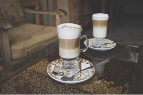

Эспрессо
Эспрессо пользуется большой популярностью во всём мире и, прежде всего, на юге Европы — в Италии, Испании и Португалии.

Латте
Кофейный напиток родом из Италии, состоящий из молока и кофе эспрессо. Латте варится на основе молока, образуя в чашке или бокале трёхслойную смесь из молока, эспрессо и пены.
Капучино
Кофейный напиток итальянской кухни на основе эспрессо с добавлением в него подогретого вспененного молока.